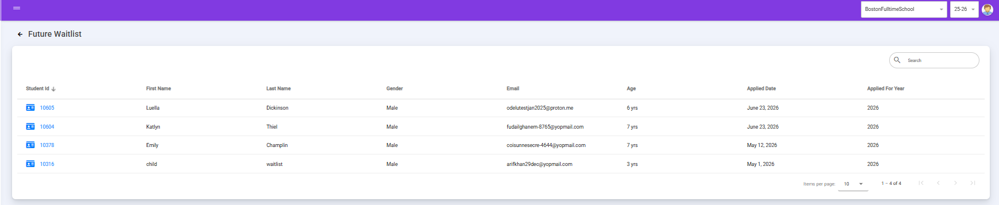
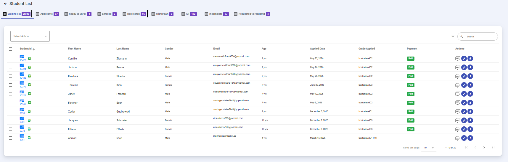

Waiting List
Manage students on the waiting list.
MACSIS provides distinct waiting list mechanisms to handle immediate classroom capacity limitations, automated fee invoicing, resubmission workflows, advance registrations for upcoming academic years, and administrative record management.
How to Access the Waiting List
To view and manage waiting list records:
- Go to the Student Info section on the dashboard sidebar.
- Click on Students.
- Select the Waitlist tab at the top of the student list dashboard.
Current-Year Waiting List & Over-Capacity Rules
The standard Waiting List handles student records when a class has reached or exceeded its maximum operational capacity for the current academic session.
- Capacity Enforcement: If a class has a set maximum capacity (for example, a limit of 20 students) and 30 students register, the 10 excess registrations are automatically queued onto the waiting list.
- Moving an Applicant: From the Applicants tab, check student rows, select Move To Wait List from the action dropdown, click Apply, and confirm the prompt.
- Waitlist Invoices & Status: Moving a student triggers an automated email with a waitlist-invoice link sent to parents. The application status changes to Incomplete until the fee is paid, after which the applicant appears under the Waitlist tab. Previously paid application fees remain non-refundable.
- Fee Payment & Incomplete Status: Students who have paid their fees will not be automatically enrolled immediately. Instead, they will show up under the Incomplete tab until all necessary fees are paid (which can include the application or waitlist fee rather than the full program fee).
Future Waiting List for Advance Registration
The Future Waitlist module handles requests from families who want to register for an upcoming academic session well in advance.
- Purpose: Allows long-term planning by capturing registration requests for future sessions (e.g., submitting a registration request for the 2028-29 session while the current active session is 2026-2027).
- Tracking: Keeps prospective future enrollments organized separately from current active rosters until the relevant enrollment period opens.

Figure: Managing advance registration requests under the Future Waitlist view.
Managing Waitlist Records & Resubmissions
When viewing the Waiting List tab, administrators can select one or multiple student records and use the Select Action dropdown menu to perform operations:
- Request Resubmission: Waitlisted students can be moved to the Requested to Resubmit tab when corrections or updates are needed. Once placed in this tab, it is up to the parents/guardians to fill out and complete the required forms or updates directly on MACSIS.
- Withdraw: Updates the student status and moves the record to the Withdrawn tab.
- Download Profile / Documents: Exports applicant profile details or downloads all associated student documents in a batch or single file package.
Understanding the Waitlist Table
The waiting list directory organizes applicant records with key tracking columns:
- Student & Parent Details: Identifies applicant ID, first name, last name, gender, email, and age.
- Application Metadata: Tracks applied date, grade applied for, and payment status.
- Action Buttons: Quick access tools for viewing notes, editing applicant details, or managing student files.

Figure: Overview of the current-year waiting list table and tracking columns.